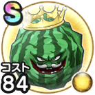

キングスイカ岩
サマーフェスティバルいやしの果汁こころ最大コスト+4スキルの斬撃・体技ダメージ+5%ヒャド属性ダメージ+7%デイン属性ダメージ+7%ジバリア属性耐性+7%転び耐性+7% / 6.5点
くわしい特徴
【ランク特殊効果】 いやしの果汁こころ最大コスト+4スキルの斬撃・体技ダメージ+5%ヒャド属性ダメージ+7%デイン属性ダメージ+7%ジバリア属性耐性+7%転び耐性+7%

サマーフェスティバルいやしの果汁こころ最大コスト+4スキルの斬撃・体技ダメージ+5%ヒャド属性ダメージ+7%デイン属性ダメージ+7%ジバリア属性耐性+7%転び耐性+7% / 6.5点
【ランク特殊効果】 いやしの果汁こころ最大コスト+4スキルの斬撃・体技ダメージ+5%ヒャド属性ダメージ+7%デイン属性ダメージ+7%ジバリア属性耐性+7%転び耐性+7%